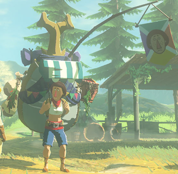

Home
Gnome
Dome
Rome
Chrome
Tome
MadLibs
Quiz

Question 1: Who is this guy?
Question 2: What games has he appeared in? (Check all that apply)
The Legend of Zelda: Phantom Hourglass
The Legend of Zelda: Skyward Sword
The Legend of Zelda: Breath of the Wild
The Legend of Zelda: Wind Waker
The Legend of Zelda: A Link to the Past
The Legend of Zelda: Spirit Tracks
Question 3: What is his profession?
Collector
Delivery Service
Merchant
Being everywhere faster than you
Question 4: In the game that took place in the beginning of the Zelda timeline, what his favorite kind of animal?
The Deku Scrub
The Moblin
The Horned Colossus
The Keese
The legendary dragon from the Akkala region
Question 5: Who is his most prominent customer?
Question 6: What were the items you could get from him in the latest Zelda game? (Check all that apply)
Arrows
Bombs
Insects
Potions
Weapons
CHECK EM